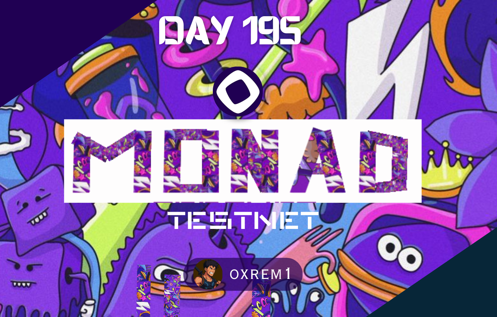

My name is Salma Imagah, I was born on May 9th 2005. I am a student of Rivers State University.
Currently on my IT at Sarvic Industrial Services Ltd. Wonderful colleagues I work with.
Well I decided to learn a skill, and Web development seemed like the one with a better oppurtunity.
Because of the fact that you can actually work with it in real life for companies and also in Web3.
Things I enjoy doing aren't so much but here you go
Musicccccccccc
Being productive
Basketball
Football
Eating actually too
Designing
Things I don't like:
Frustration
Stagnation
Unproductiveness (is that even a word? )
I was asked to share an Image I like, so I thought why not share the one I designed on Canva for Monad?
Check it out below:

Earlier I mentioned I LOVE MUSIC I think I actually listen to almost every variety. I'm talking from Afro beats to alte to trap, rap, RnB, mention it I'm there already.
I actually enjoy listening to Burna Boy and my favourite of his song is Spiritual.
No need to go to your music app I got you.
You can listen to it below
I forgot to add that I enjoy watching football also. My Favourite club is Liverpool Football club.
Recently Szobozlai scored a Worldie freekick against Arsenal.
Watch it and be absolutely appauled!
Click Monad guyssss
Here
or fill your details below